Kinematics Of A Particle¶
- Kinematics
- The study of the motion of particles and rigid bodies, disregarding the forces associated with these motions.
- Frame of Reference
- A Frame of reference must be specified to describe motion of a point. While inertial frames are preferred for dynamic analysis, in kinematics there are no preferred frames of reference.
- Relative To / With Respect To
- Means as viewed by an observer fixed in the referenced system and moving with it
- Referred To (a certain system)
- Means that the vector is expressed in terms of the unit vectors of that system
2.1 Position, Velocity, and Acceleration of a Point¶
The Position of a point P relative to the XYZ reference frame is given by the vector 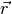 drawn from the origin O to P.
Velocity and Acceleration are then defined as:
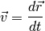
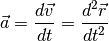
The general motion of a rigid body involves changes of orienctation as well as changes in location
2.2 Angular Velocity¶
An infinitesimal displacement of all points in a rigid body can be considered as a translational displacement plus a rotational displacement about an axis through a base point fixed in the body.
is a vector whose magnitude is equal to the angle of rotation and whose direction is along an axis determined by those points not displaced by the infinitesimal rotation.
Angular Velocity is then:
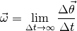
Angular Velocity has no meaning for a point, only a body (three points, rigidly connected, not colinear)
2.3 Rigid Body Motion about a Fixed Point¶
Rotational motion relative to a given system does not rely on the choice of the base point. Therefore, assume the base point is at the origin.
TODO Image here
In general, the rotation of P at any instant is taking place about an axis passing through the fixed base point. This axis is the instantaneous center of rotation
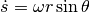
The velocity of P along its path is of magnitude and is directed along the tangent to the path.
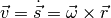
Differentiating with respect to time gives
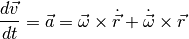
and since 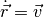
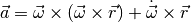
The first term 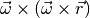 is known as centripetal acceleration and the second term 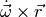 is tangential acceleration
2.4 Time Derivation of a Unit Vector¶
TODO Image Here
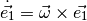
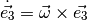
If 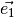, 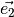, 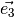 are orthogonal, can be written
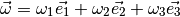
and
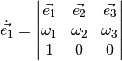
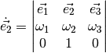
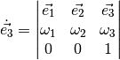
Becoming more specific, if the basis vectors are equal to 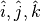, respectively, then
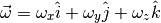
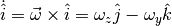
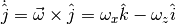
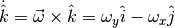
It can be seen in each case the time derivative of a unit vector lies in a plane perpendicular to the vector, in accordance with the defintion of a cross product. Note that in each case, the rate of change of a unit vector is calculated with respect to a fixed coordinate system but is expressed in terms of the unit vectors of the moving system.
2.5 Velocities and Acceleration of a Particle in Several Coordinate Systems¶
Cartesian¶
- Position
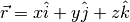
- Velocity
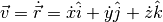
- Acceleration
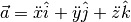
Cylindrical¶
- Position
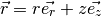
- Velocity
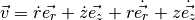
- Acceleration
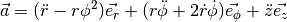
Spherical¶
- Position
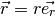
- Velocity
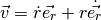
- Acceleration
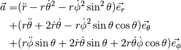
Tangential and Normal Components¶
The velocity and acceleration of a point P as it moves on a curved path in space may be expressed in terms of tangential and normal components.
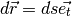
where 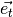 is a unit vector that is tangent to the path of P and points in the direction of increasing s
- Velocity
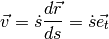
- Acceleration
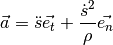